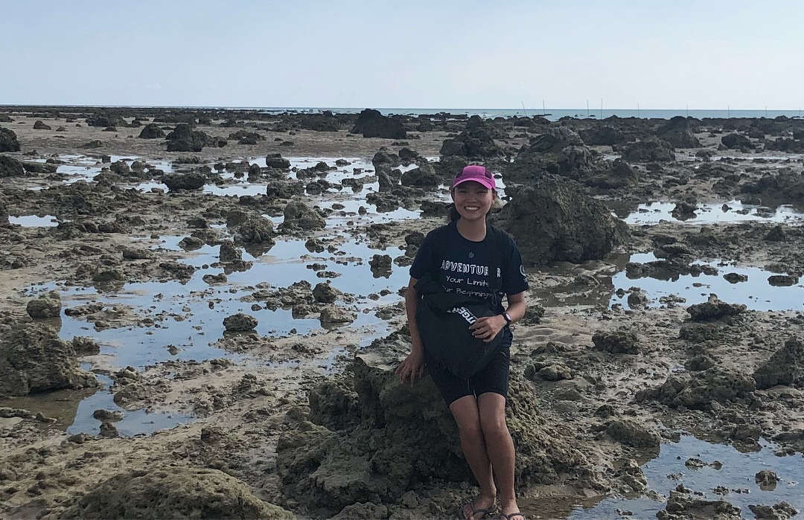
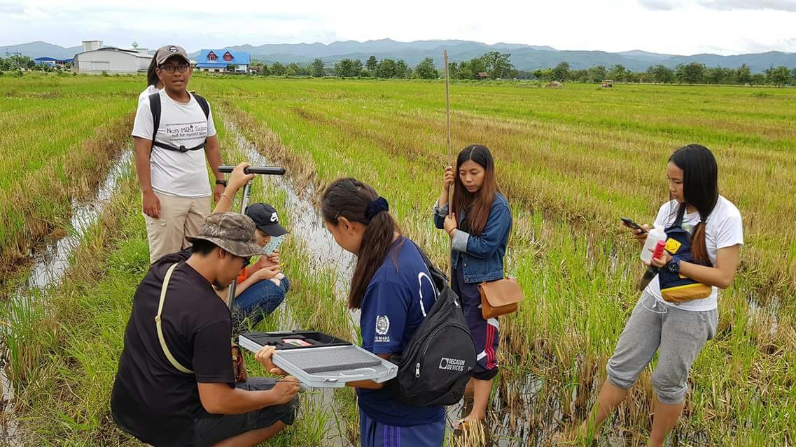
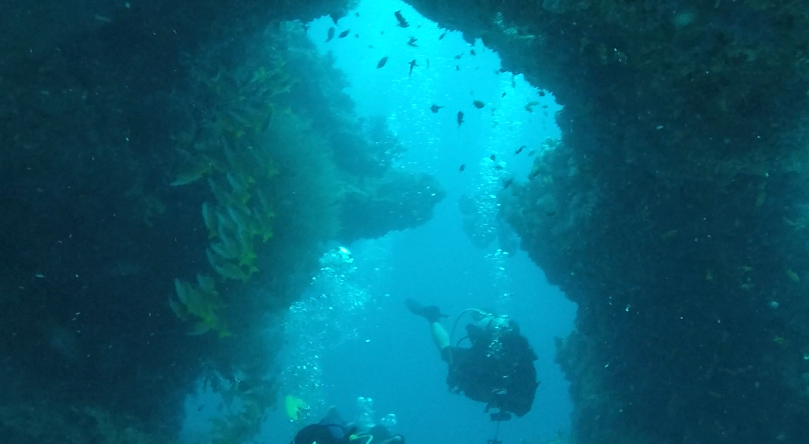

INTRODUCTION
SOCIAL MEDIA
-

- Name: Pak Hui Ying
- Age: 25
- Occupation: M.Eng student at Nanyang Technogical University of Singapore
- Major: Civil and Environmental Engineering.
Expected date of graduation: July 2020.
- Degrees: BSc, M.Eng (Ongoing)
-

- Learning about vocal pedagogy
- Learning Data Science, Machine Learning, AI
- Eating and cooking
- Hiking & Trekking
- Travelling
-

- Open & Advance Diving (PADI)
- Proficient in R
- Basic skills in: C, Python, Java, Javascript, Swift, SQL
- iOS and Android Development
- Web Development
- Game Development using Lua and LOVE